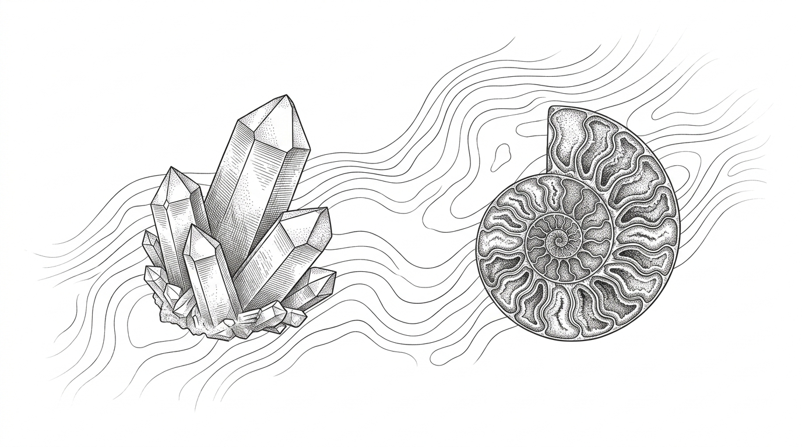

Branch: landing-page · Review Gallery
Natural Science Folio — Three Variants
Each variant uses custom monochrome copperplate engravings blended natively into warm uncoated paper (Light) and inverted soot plate (Dark), paired with calm scroll parallax and tactile hairlines. Toggle Light/Dark top-right to inspect both polarities.

The Astronomical Atlas
Anthropic-style left-aligned editorial hero with the tilted armillary sphere & slowly rotating SVG orbital rings on the right, followed by exhibition mats, tabbed surfaces, and specimen bento.

The Naturalist's Field Guide
Centered antique monograph title page framed by botanical fronds and registration corners, opening into alternating two-column natural-history specimen spreads.

The Instrument Maker's Folio
Swiss-meets-Encyclopédie hairline grid with numbered index strips, split drafting-instruments hero, tabular capability ledger, and dual-column strata & downloads.
Generated Assets · Monochrome Copperplate Series
Four Custom Engraving Plates
